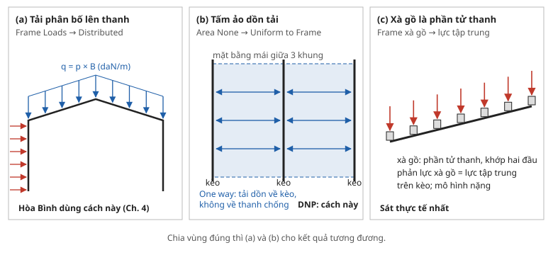

Bài 3.5. Đưa tải bao che vào mô hình Applying cladding loads
Tải mái, tải tường đi qua tôn và xà gồ trước khi tới khung. Có ba cách đưa tải này vào mô hình (Bảng 3.2); chọn cách nào quyết định công kiểm tra về sau.
- So sánh ba cách đưa tải bao che và chọn cách phù hợp.
- Tính tải phân bố lên khung theo bề rộng chịu tải; kiểm tra phương dồn tải của tấm.
1. Tình huống
Mô hình Hòa Bình gán tải phân bố trực tiếp lên kèo, cột (cách a) theo bề rộng chịu tải 8 m. Mô hình DNP dùng tấm ảo Area Load – Local 3 – One way (cách b). Một học viên chuyển cách b sang mái dốc nhưng quên xoay trục tấm, và toàn bộ tải mái dồn vào thanh chống.
2. Nội dung chính
Đưa tải bao che vào mô hình
| Cách | Ưu điểm | Nhược điểm |
|---|---|---|
| (a) Gán tải phân bố trực tiếp lên kèo, cột (Frame Loads → Distributed) theo bề rộng chịu tải | Đơn giản, minh bạch, dễ kiểm tra bằng tay; là cách của bảng tính khóa và mô hình Hòa Bình | Phải tự chia vùng gió (A, B, C, F, G, H…) theo từng khung; khung biên và khung giữa khác nhau |
| (b) Vẽ phần tử tấm "ảo" (Area, tiết diện None hoặc Shell mỏng, Membrane) phủ mái và tường, gán Area Loads → Uniform to Frame (One way/Two way) | Tự dồn tải theo diện tích; gán gió theo vùng bằng cách chia tấm | Phải bảo đảm tấm không tham gia độ cứng (tiết diện None), phương dồn tải đúng |
| (c) Mô hình xà gồ, dầm tường làm phần tử thanh, tải lên xà gồ | Sát thực tế nhất, cho phản lực xà gồ là lực tập trung trên kèo | Mô hình nặng, nhiều phần tử |
Bảng 3.2. Ba cách đưa tải bao che vào mô hình
Mô hình DNP dùng cách (b) với Area Load – Local 3 – One way theo bảng "in SAP" của giảng viên (Chương 9). Mô hình Hòa Bình dùng cách (a) (Chương 4). Hai cách cho kết quả tương đương nếu chia vùng đúng.
Với cách (b), khi gán Uniform to Frame – One way trên mặt mái dốc, SAP dồn tải theo phương trục 1 của tấm về các thanh ở hai cạnh tương ứng. Phải xoay trục địa phương của tấm sao cho tải được truyền về kèo (song song với kèo), không truyền về thanh chống. Kiểm tra bằng Display → Show Load Assigns → Frame sau khi chuyển.
3. Thực hành SAP2000
- Cách (a): chọn kèo, Assign → Frame Loads → Distributed, nhập $q = p\times B$ theo trục Gravity hoặc Local 2.
- Cách (b): vẽ tấm, gán tiết diện None, Assign → Area Loads → Uniform to Frame (Shell), chọn One way.
- Display → Show Load Assigns → Frame để xem tải đã dồn về kèo.

4. Lỗi thường gặp
- Tấm ảo gán tiết diện Shell thật: tấm tham gia độ cứng, giảm nội lực khung.
- Dồn One way sai phương: tải về thanh chống thay vì về kèo.
5. Luyện tập
Mô hình nhà xưởng Hòa Bình đưa tải bao che vào bằng cách nào?
Gợi ý
Xem đoạn sau Bảng 3.2.
Lời giải
Hòa Bình dùng cách (a); DNP dùng cách (b).
Áp lực gió lên tường dọc 0,55 kN/m², bước khung 8 m. Tính tải phân bố gán lên cột của một khung giữa (cách a).
Gợi ý
$q = p\times B$.
Lời giải
$q = 0{,}55\times8 = 4{,}4$ kN/m.
Hoạt tải mái 0,30 kN/m², nhập bằng tấm ảo One way đã xoay đúng phương. Khung giữa nhà xưởng Hòa Bình (bước 8 m) có nửa kèo dài 25,06 m theo mặt dốc. Tính tổng tải dồn lên một nửa kèo.
Gợi ý
Khung giữa nhận tải của hai nửa ô hai bên: bề rộng 8 m.
Lời giải
$q = 0{,}30\times8 = 2{,}4$ kN/m; tổng $2{,}4\times25{,}06 = 60{,}14$ kN.
- (a) Tải trực tiếp: đơn giản, minh bạch; (b) tấm ảo: tự dồn tải, phải kiểm tra phương; (c) xà gồ: sát thực tế, mô hình nặng.
- Tấm ảo: tiết diện None, trục 1 của tấm song song với kèo.
- Khung biên nhận một nửa bề rộng chịu tải của khung giữa.